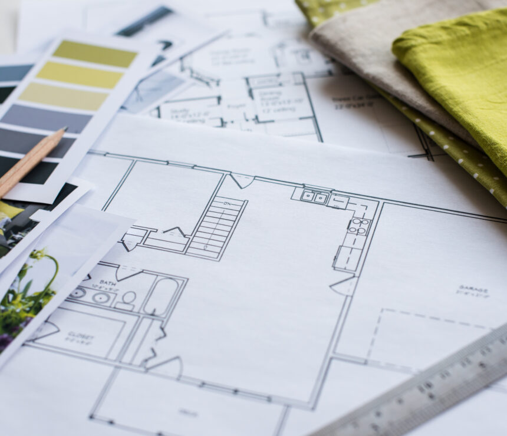

Moim zainteresowaniem jest architektura wnętrz. Polega to na projektowaniu pomieszczeń czyli wybieraniu kolorów ścian, rodzaju podłogi i mebli. Lubie to robić, ponieważ to mnie odstresowuje i sprawia, że czuję satysfakcje. W przyszłości chciałabym zajmować się tym na poważnie i zarabiać z tego pieniądze oraz zaprojektować swój wymarzony dom.
Architekturą zaczęłam sie interesować w wieku 12 lat wtedy też zaczęłam robić różne projekty napierw na kartce, ale z czasem znalazłam różne aplikacje, które okazały sie być dla mnie dużo lepszym miejscem do robienia projektów. Jako, że wiąrze przyszłość z architekturą swój profil w liceum wybrałam pod to hobby.
Zamierzam studiować architekture budynków, ponieważ ma się wtedy więcej perspektyw na przyszłość. Mimo to architektura wnętrz bardziej mnie interesuje, ponieważ sądze że to dużo ciekawsze nią projektowanie budynków. Mam nadzieję, że zrealizuje moje plany i w przyszłości będę czerpać z projektowania jeszcze większą przyjemność niż teraz.